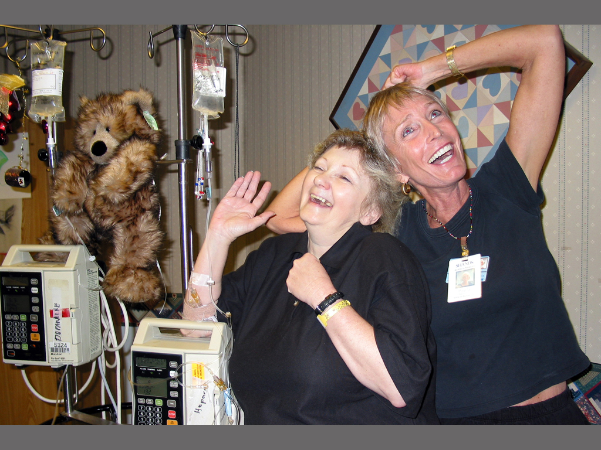

|
Acting Healthy Reflections Theatre Troupe - Promotional Video
Produced by: Manjusha Films
Director/Camera/Editor: Hemal Trivedi
Location: Gainesville, Florida
Year: 2006
Length: 19:57
One of my earlier films, this is a promotional video
for Reflections Theater Troupe - a playback theater
troupe in Shands medical hospital. They are a part
of University of Florida's Arts in Medicine program
and they facilitate healing by playing back patients'
personal stories. The film screened at various medical
conferences, Arts in Healing seminars and is currently
being a used by a faculty at UF for her class on
Theater in Medicine.
|